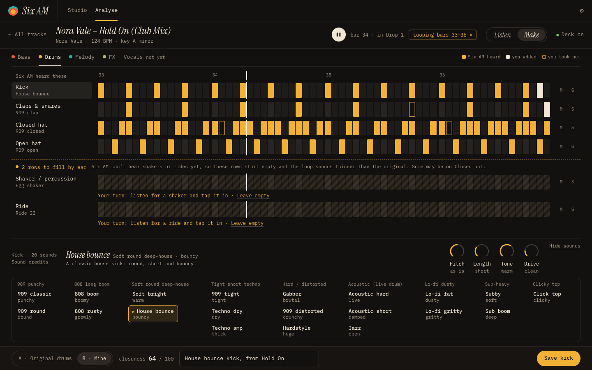
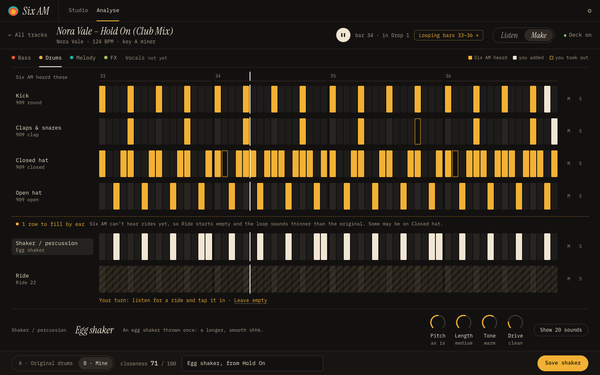
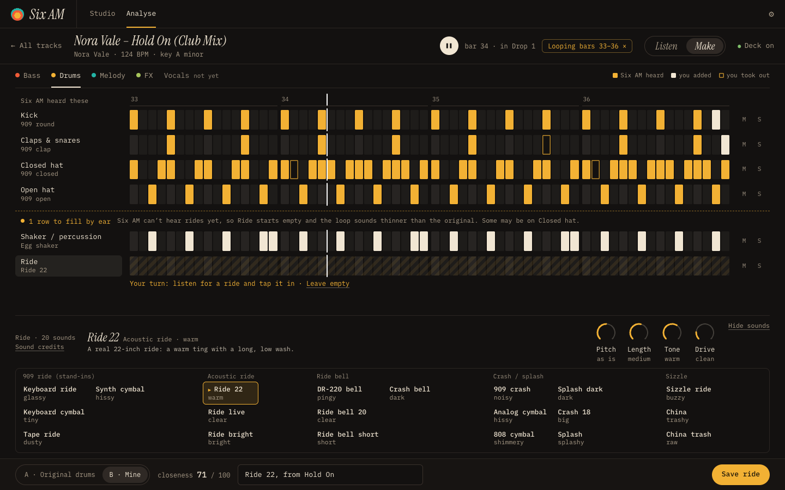
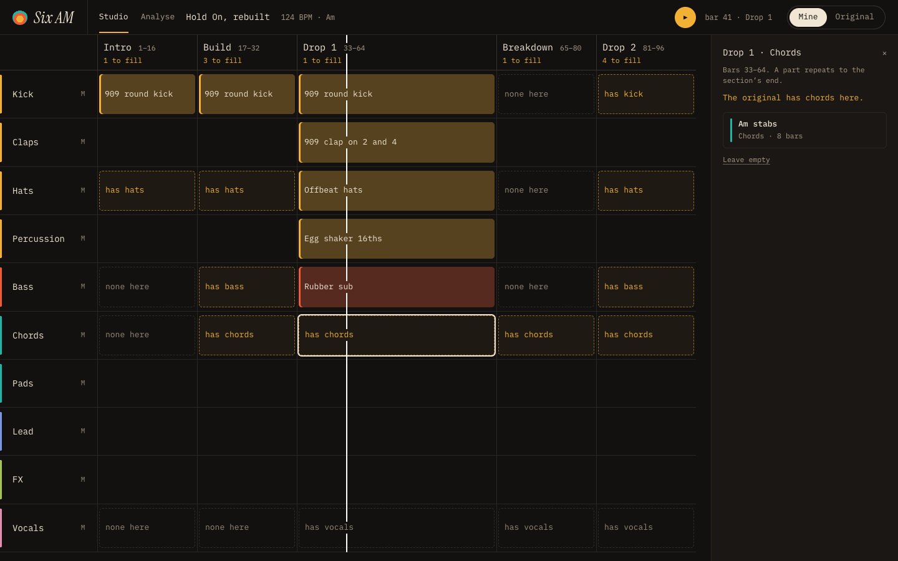
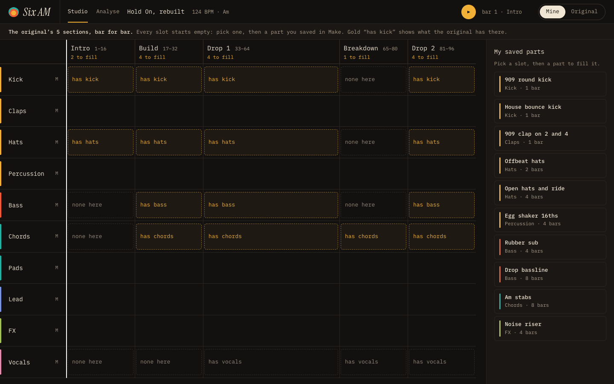
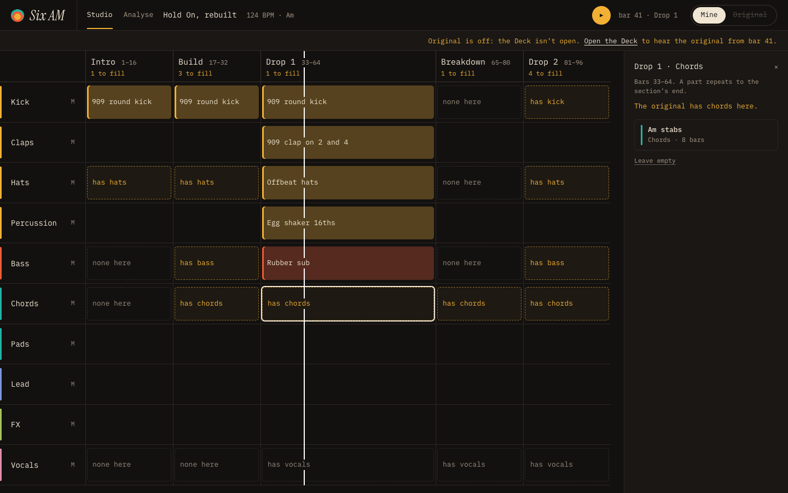

Six AM · Rebuild the song, the final direction
Phase 7 design round 3 (decision 0028, L278): the owner’s hybrid. Shelf’s layout for Make → Drums with Side list’s highlighted row and the sound under each row name; Side list’s arrangement grid for Studio → Rebuild with Table’s wording. Same demo track as round 2 (Nora Vale, Hold On (Club Mix), 124 BPM, A minor, 96 bars) and the real kit (kit-p7.ts, 120 CC0 sounds). Each state at 1440 × 900 (click a picture), the 1280 × 720 version linked under it. Rough prototype: nothing plays, but taps work. All copy is draft for the owner to rewrite. Open p7-final/prototype.html: the buttons at the bottom switch the state; URL options ?m=1|2|r|3|e, &deck=0, &data=worst, &credits=1, &shot=1.
Make → Drums
Rows Six AM heard on top, each row name with its current sound under it and a filled highlight on the selected row. Shaker / percussion and Ride wait below a gold dashed line: “2 rows to fill by ear” and why, “…so the loop sounds thinner than the original”, and “Your turn: listen for a shaker and tap it in · Leave empty” under each empty row, never over its cells. The hit legend sits right-aligned on the Drums header line. Below, the shelf of 20 sounds, one group per family, every group name on one line and every feel word kept at 1280. Fixing by ear folds the shelf to one line and the rows grow into the room it leaves.









Studio → Rebuild
Lane names once on the left, the original’s sections as columns sized by their bars, a playhead the labels sit clear of, and a right margin before the side panel. Each slot says what the original has: gold “has kick” where it has one, “none here” where Six AM measured none, nothing where Six AM can’t measure the lane (a “+” shows on hover or focus). One strip under the top bar explains the empty rebuild, and when the Deck is closed it says so under the Mine / Original switch, which stays where it is with Original struck through.









Worst case at 1280 × 720
Long artist and title, long part names, 8 sections with a 4-bar Fill and “Breakdown (with the vocal)”. Narrow sections drop words and keep their marks; the full text is in each slot’s tooltip.